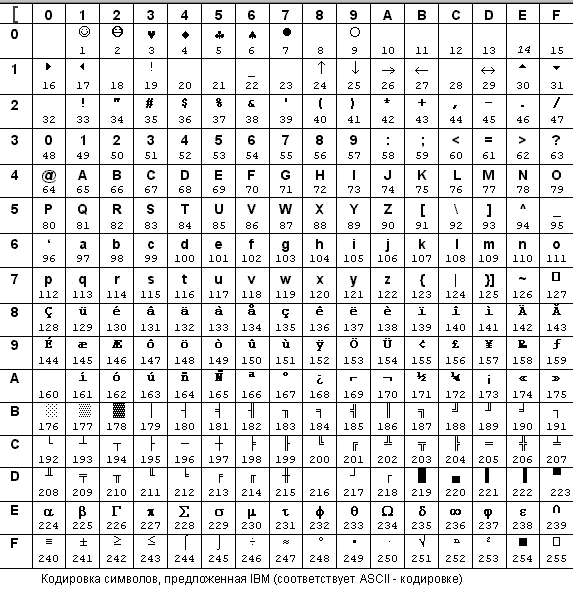

Переменные — наверное, самое важное, что есть в любой языке программирования. Переменная — просто какой-то абстрактный объект, у которого есть имя, обращаясь к которому мы можем приравнивать какое-то значение переменной, менять его, узнавать.
Как это реализовать? У каждой переменной в языке C есть свой тип, у каждого типа есть набор значений, которые может принимать переменная данного типа
Рассмотрим несколько стандартных типов:
1. int
Переменные этого типа могут принимать как значения целые 32-битные числа (битность зависит от операционной системе, например, в DOS'е переменные типа int будут 16-битными). Соответственно, значения они могут принимать от -231 до 231-1.
Также переменные типа int могут быть беззнаковыми - принимать только неотрицательные значения. Для этого надо перед слово int написать слово unsigned. unsigned int - беззнаковый целый тип, переменные с этим типом могут принимать значения в диапазоне 0..232-1
Все переменные типа int можно закодировать 32-битными двоичными числами, а каждое из таких чисел занимает 4 байта. То есть переменная типа int занимает 4 байта памяти.
2. char
Это символьный тип. Переменные этого типа являются символами в таблице ASCII (картинка таблицы ниже).
Тут все просто: у каждого символа есть код - его номер в таблице ASCII, каждому номеру соответствует какой-то символ.
Всего символов 256 = 28. То есть чтобы закодировать все символы двоичными числами хватит 8 ячеек памяти, каждая ячейка памяти - один бит, то есть в сумме получаем 1 байт. Итого, каждый символ в памяти компьютера занимает 1 байт.
Важно знать, что тип char - знаковый, он хранит значения от -128 до 127, соответственно, символы в таблице ASCII с номерами 128..255 хранятся в типе с кодами -128..-1. Обычно эти символы не используются, и все работает нормально, но бывают случаи, когда нужно воспользоваться символами с кодами ASCII больше 127. Тогда нужно использовать тип unsigned char, он хранит значения от 0 до 255.

3. float, double
Это типы для чисел с плавающей точкой — вещественных чисел. Не будем сейчас говорить про хранение таких чисел в компьютере, пока просто скажем, что float занимает 4 байта, double — 8, то есть double более точный. Этого нам пока хватит.
В конце для справки приведем таблицу с основными типами, принимаемыми ими значениями и занимаемым объемом памяти (цифры приведены для операционной систесы Windows).
| Тип переменной | Описание типа | Диапазон значений | Сколько занимает памяти |
| int | Целочисленный знаковый тип | -231..231-1 | 4 байта |
| unsigned int | Целочисленный беззнаковый тип | 0..232-1 | 4 байта |
| char | Символьный знаковый тип | -128..127 | 1 байт |
| unsigned char | Символьный беззнаковый тип | 0..255 | 1 байт |
| float | Вещественный тип | 3.4e–38..3.4e+38 | 4 байта |
| double | Вещественный тип | 1.7e–308..1.7e+308 | 8 байт |